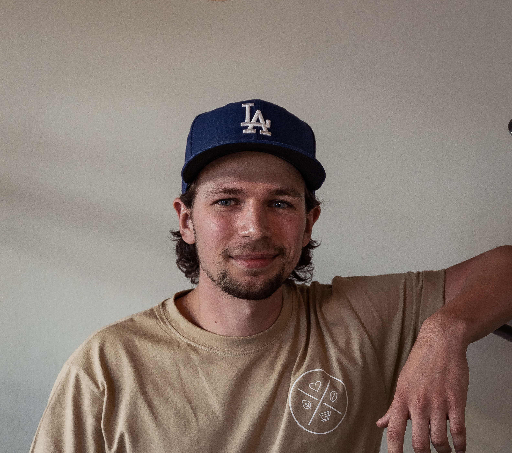

Who am I
Interested in why I could be the right fit for you and your content requirements? Let me tell me about myself then

I'm a former Software Developer with an generalistic education in Software Development, Design, 3D, Game Development, and Physical Prototyping. I've been dappling in VFX and filmmaking for as long as I can remember, long before I even started the program. I'm also a devouted sport-aholic, who's always done sports and often push myself to become better at whatever sport is taking up my time at the moment. That lead me to playing for the Junior National Team for 3 years, earning a starting position during that time. If you're looking for someone to capture your sports journey, document your way to a goal, or need some cool shots, I understand what it takes and how much dedication goes into training and preparation for these events. Shoot me an email if you're interested, or just want to reach out and hear about how we can visualize your achievment.